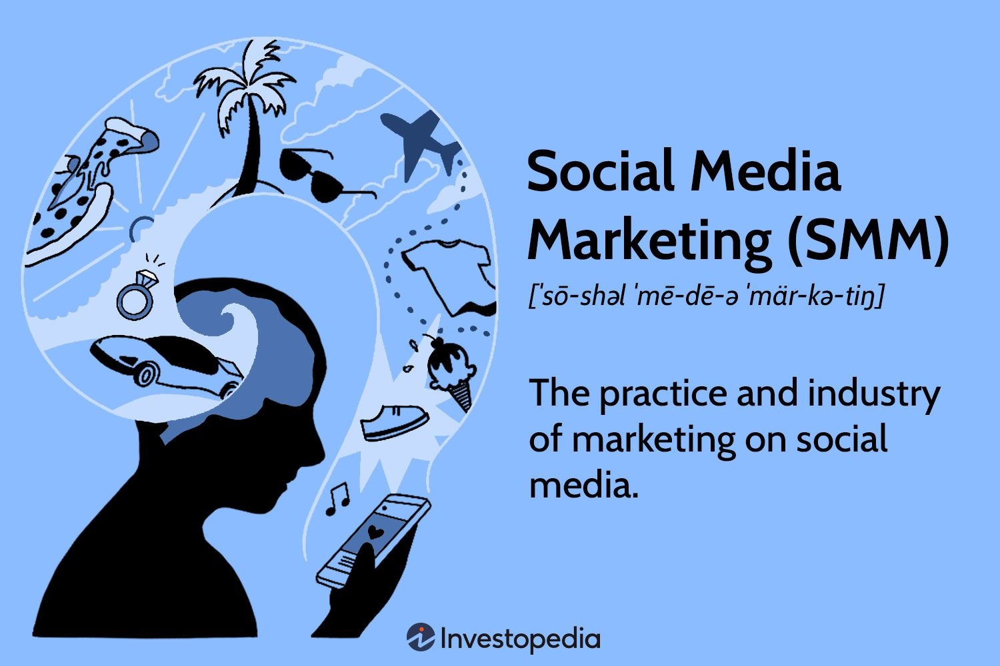
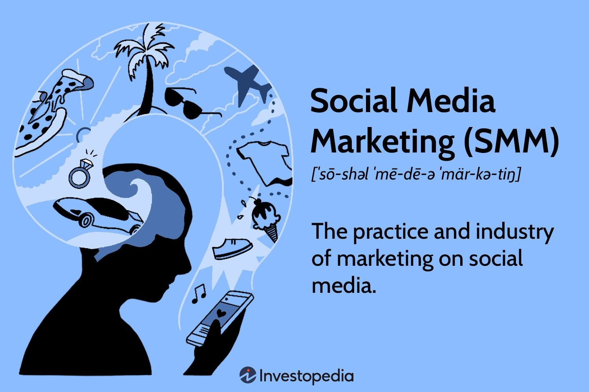

.jpg)
 
 
Web development is a dynamic and constantly evolving field that has become an essential part of our daily lives. With the advent of the internet, businesses and individuals alike have become increasingly reliant on websites to connect with customers and communicate their message to the world. In order to succeed in web development, it is important to have a solid understanding of the technologies and frameworks that power the web. Some of the key technologies and frameworks used in modern web development include HTML, CSS, JavaScript, and various web frameworks like React, Angular, and Vue. HTML, or Hypertext Markup Language, is the foundation of the web. It is used to structure content on web pages, including headings, paragraphs, lists, and links. CSS, or Cascading Style Sheets, is used to style the content on web pages, including fonts, colors, and layouts. JavaScript, on the other hand, is a programming language that is used to add interactivity to web pages, including animations, pop-ups, and other dynamic features. Web frameworks like React, Angular, and Vue provide developers with pre-built components and tools to build complex web applications quickly and efficiently. These frameworks are built on top of JavaScript and offer features like data binding, component-based architecture, and state management. In addition to these core technologies and frameworks, web developers also need to be familiar with various tools and platforms used in web development. These include code editors like Visual Studio Code and Sublime Text, version control systems like Git, and deployment platforms like Heroku and AWS. One of the biggest challenges in web development is keeping up with the constantly changing landscape of web technologies and best practices. To stay current, developers need to be proactive about learning new technologies and attending conferences and meetups to stay connected with the broader web development community. Overall, web development is an exciting and rewarding field that offers endless opportunities for creativity and innovation. With the right skills and mindset, anyone can become a successful web developer and make a meaningful impact on the web.
Web design is a critical component of the overall user experience for websites and digital applications. Effective web design involves not only creating visually appealing layouts and graphics, but also ensuring that the website is easy to navigate, user-friendly, and accessible to all users. One of the most important principles of web design is usability. A website should be designed with the user in mind, making it easy to find the information they need and navigate through the site. This can involve creating clear navigation menus, using consistent branding and typography, and minimizing clutter on the page. Another key aspect of web design is responsiveness. With the rise of mobile devices, it's essential that websites are optimized for different screen sizes and devices. This can involve using responsive design techniques, such as flexible layouts and media queries, to ensure that the website looks and functions well on all devices. Accessibility is also an important consideration in web design. Websites should be designed to be accessible to all users, including those with disabilities. This can involve using accessible color schemes, providing alternative text for images and other media, and ensuring that the website is navigable using assistive technologies like screen readers. Visual design is also a critical component of web design. A website should be visually appealing and engaging, with a clear hierarchy of information and well-designed graphics and images. This can involve using color and typography effectively, creating compelling visual elements like icons and illustrations, and ensuring that the overall design is consistent with the branding and messaging of the organization. Finally, web designers should also consider the technical aspects of web design. This can involve optimizing images and other media for web use, ensuring that the website loads quickly and efficiently, and adhering to web standards and best practices to ensure compatibility with different browsers and devices. Overall, web design is a multifaceted discipline that requires a range of skills and expertise. Effective web design involves not only creating visually appealing layouts and graphics, but also ensuring that the website is user-friendly, accessible, and optimized for different devices and browsers. By focusing on these principles, web designers can create engaging and effective websites that deliver a great user experience for all users.
Search Engine Optimization (SEO) is the practice of optimizing a website and its content to increase the quality and quantity of organic traffic from search engines. SEO has become an essential part of digital marketing, and it helps businesses to improve their online presence, generate leads, and increase revenue. Here are some essential SEO techniques that can help you optimize your website: 1. Keyword Research: Keyword research is the foundation of SEO. You need to find the right keywords that your target audience is using to search for your products or services. You can use various tools like Google Keyword Planner, Ahrefs, and SEMrush to find the right keywords. 2. On-Page Optimization: On-page optimization is the process of optimizing your website's content and structure. It includes optimizing your website's title tags, meta descriptions, header tags, and URL structure. You should also focus on creating high-quality content that is relevant and informative to your target audience. 3. Off-Page Optimization: Off-page optimization is the process of optimizing your website's backlinks. Backlinks are links that point back to your website from other websites. You need to build high-quality backlinks from relevant and authoritative websites. This can be done through guest blogging, broken link building, and other link building techniques. 4. Technical SEO: Technical SEO is the process of optimizing your website's technical elements, such as site speed, mobile-friendliness, and schema markup. A fast-loading website that is mobile-friendly and has schema markup will rank higher in search engines. 5. Local SEO: If you have a local business, you need to optimize your website for local SEO. This includes optimizing your website for local keywords, creating local business listings, and getting positive reviews from customers. 6. Analytics and Reporting: You need to track your SEO efforts and measure your website's performance. This can be done through Google Analytics and other reporting tools. You need to track your website's traffic, bounce rate, conversion rate, and other important metrics. In conclusion, SEO is an essential part of digital marketing. By implementing these techniques, you can optimize your website and improve its visibility in search engines. SEO is an ongoing process, and you need to keep updating your website's content and structure to stay ahead of the competition.
Social media has become an integral part of digital marketing, and it offers businesses an opportunity to connect with their target audience, build brand awareness, and generate leads. Social media marketing involves using social media platforms to promote your products or services and engage with your audience. Here are some essential social media marketing techniques that can help you reach your marketing goals: 1. Define Your Goals: Before you start with social media marketing, you need to define your goals. Do you want to increase brand awareness, generate leads, or drive sales? Once you have defined your goals, you can create a social media strategy that aligns with your goals. 2. Choose the Right Platforms: There are various social media platforms, and you need to choose the ones that are most relevant to your business. For example, if you are a B2B company, LinkedIn would be the best platform to target professionals. If you are a visual brand, Instagram and Pinterest would be the best platforms to showcase your products. 3. Create Engaging Content: Social media is all about engagement, and you need to create content that is engaging and relevant to your target audience. You can create various types of content, such as images, videos, infographics, and blog posts. You should also focus on creating a consistent brand voice and tone. 4. Build a Community: Social media is all about building relationships, and you need to build a community around your brand. You can do this by engaging with your audience, responding to their comments and messages, and creating a sense of belonging. You can also leverage user-generated content to build trust and credibility. 5. Use Social Media Advertising: Social media advertising is a great way to reach a larger audience and promote your products or services. You can use various social media advertising options, such as sponsored posts, promoted tweets, and LinkedIn ads. You should also target your ads to your specific audience to get the best results. 6. Measure Your Results: You need to track your social media marketing efforts and measure your results. This can be done through social media analytics tools, such as Hootsuite, Sprout Social, and Google Analytics. You should track your engagement rate, reach, click-through rate, and other important metrics. In conclusion, social media marketing is a powerful tool for businesses to connect with their audience, build brand awareness, and generate leads. By implementing these techniques, you can create a successful social media marketing strategy that aligns with your business goals. Social media is constantly evolving, and you need to keep updating your strategy to stay ahead of the competition.